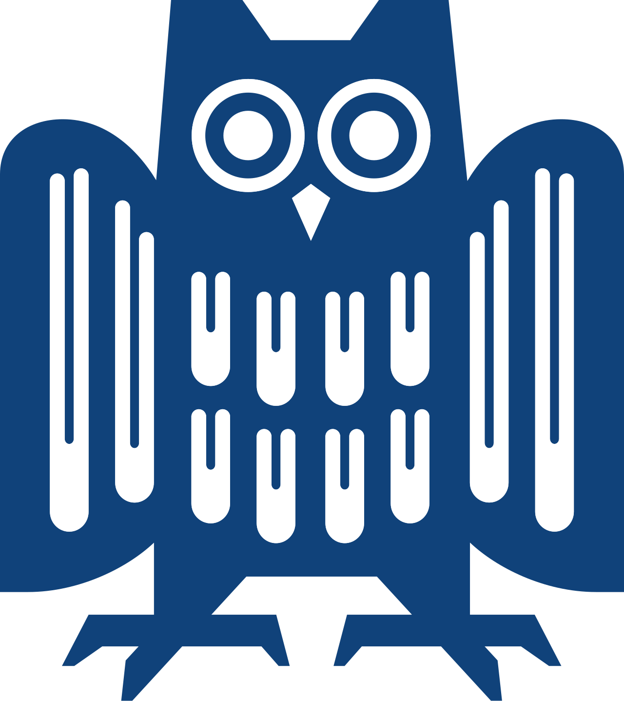

I build AI systems thatcheck their own answersbefore anyone trusts them.
I'm a Computer Science student at Saarland University working on AI agents, retrieval-augmented generation and LLM evaluation in Python. In everything I build, a model's output passes a schema, rule-based code or a person before it counts.
That habit comes from lower in the stack. Before LLMs I wrote a C compiler with a RISC-V backend and a verification layer that proves programs correct, and I still approach models the same way: measure where they fail instead of assuming they work.
Based in
Saarbrücken, open to relocation
Languages
English C1 · German A2
Focus
Agents, RAG, LLM evaluation
Experience
Dec 2026 – May 2027
Intern · SereactIncoming
Stuttgart-based Physical AI company building Cortex, a vision-language-action model that runs warehouse picking robots in live production.
Apr 2026 – Sep 2026

Teaching Assistant · Saarland University
Statistics for Data Science & AI
Ran weekly tutorials and helped design course materials, assignments and exams.
Tested the university's in-house LLM chatbot against course material, logging recurring failure patterns such as hallucinations and inconsistent reasoning.
Fed those findings back into the chatbot's next iteration.
Education
Oct 2024 – Present
B.Sc. Computer Science · Saarland University
Saarbrücken, Germany
Programming
Data Structures & Algorithms
Machine Learning
Linear Algebra
System Architecture
Software Engineering
Statistics
Apr 2018 – Aug 2023
O Levels & A Levels · Cambridge International
Science group
Physics
Chemistry
Mathematics
Biology
Projects
Each project lists how its output gets checked. Run the checks, or open the details.
AI agent · 2026
Bureaucracy Navigator
Reads photos of official German letters, pulls out deadlines and required actions, and ranks open letters by urgency. Calendar reminders and formal German replies are only generated after a person approves.
Pydantic schema on every answer
Second-pass self-check per field
Human approval gate in the backend
87.5% deadline accuracy on 16 hand-labeled letters
Details
Two-stage Gemini pipeline reads the letter image directly, with no OCR step.
Rule-based priority engine with zero model calls flags clashing deadlines, covered by 24 pytest tests.
Async Redis job queue cut upload waits from about 4 minutes to milliseconds.
10.5% false-confidence rate, with every failure written up in the repo.
Assigns severity, category and a summary to 300 real GitHub issues with LangChain and Gemini, and retrieves similar past incidents from ChromaDB through a FastAPI endpoint.
Benchmarked on 40 hand-labeled issues
Exact-match accuracy and Cohen's kappa
Server-side recheck before any alert email
Details
Similar past incidents found with sentence-transformer embeddings in ChromaDB.
Critical issues trigger an n8n alert workflow.
Retry with exponential backoff on every model and webhook call.
Several prompt revisions tested before reporting the measured result.
Ingests 11.6 years of hourly SMARD market data into a star schema and presents it in a Power BI dashboard, tracing a 2021–22 price spike to the European gas crisis.
Automated suite for coverage gaps and outliers
6,348 API chunks, zero failed pulls
Reruns that never duplicate records
Details
Dimensional star schema built with SQLAlchemy.
Power BI dashboard with 8+ DAX measures and 5 visualisations.
Renewable share reaching 64%, negative-price hours up 20x since 2018.
One unresolved anomaly recorded in the report instead of dropped.
Python · SQL · SQLAlchemy · Power BI · DAX · pandas